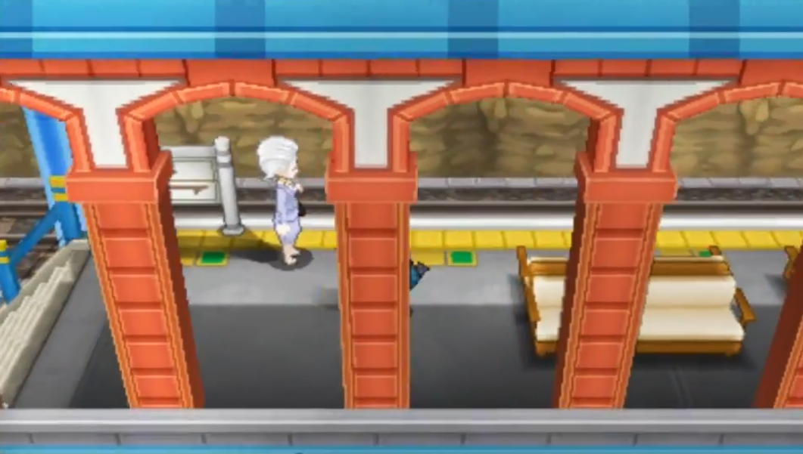
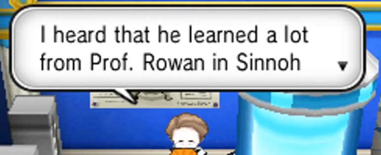
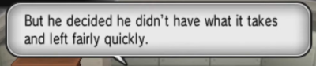

Couriway Town
The early life timeline is uncertain, but we know that at some point, a boy dreaming about the future leaves a mysterious treasure in Couriway Town. Will the player character ever find it?
Rowan’s Protégé!
According to a lab associate in Professor Sycamore's lab, the Augustine traveled to Sinnoh as a young man to study under Professor Rowan. Due to the similar timeframe and age range, it's rumored that Augustine may be associated with Sinnoh's champion, Cynthia.
Tower of Mastery Dropout!
Augustine heads to the Tower of Mastery in Shalour City to study Mega Evolution. But he drops out, feeling he can’t meet the challenge. As I mentioned, the order of these events aren't quite clear.
Pre-Game: Welcome to Kalos!
Professor Sycamore is the first character the player character meets when they boot up a new game: he introduces the player to the world of Pokémon, and asks a few questions to get their journey started, and hints at the fun to come! It's a very sweet start.

Vaniville Town
Professor Sycamore's letter, meant for the player character's mom, is entrusted to Trevor. This letter is basically a permission slip for the player character to go on their big journey throughout Kalos. The letter has beautiful lettering and is even perfumed! He personally entrusts Trevor and Tierno with their Pokédexes, and asks them to deliver a Pokédex and Kalos starter to the other three. Professor Sycamore is so thoughtful and kind, making sure everyone gets a buddy!

Lumiose City️
The player character first meets Professor Sycamore in Lumiose City, guided to his laboratory by his assistants, Dexio and Sina. It's so exciting! He challenges them to a battle to test their skills and even gives them a second starter (Of Bulbasaur, Charmander, or Squirtle) and an associated Mega Stone for its final form. Like a venusaurite! He is so generous and kind, helping the player grow, but also insisting that they take the time to figure out what their journey means to them.

Route to Shalour City
Just before the player enters Reflection Caves, Professor Sycamore rings them up on the holocaster. He informs them to meet the Mega Evolution Guru in Shalour City! He encourages them to learn all about mega evolution and how it works. His love for mega evolution is so cool!

Coumarine City
At the Coumarine City monorail station, the player character stumbles upon Professor Sycamore chatting with Diantha about mega evolution! They talk about how it might be tied to the bonds between Pokémon and Trainers! He also congratulates the player for using Mega Evolution for the first time and gives them HM02 Fly. That's so nice!

Lysandre Café!
Professor Sycamore phones the player character over the Holocaster while they're in Lumiose City and asks them to meet him in Lysandre Café, the most chic and trendy place in town! Professor Sycamore is friends with Lysandre, and listens patiently to Lysandre's words, while also gently encouraging the player to come to their own conclusions about what was said.

Couriway Town: A Rematch & Apology!
The player character receives a message from Professor Sycamore post-Team Flare, asking for a face-to-face meeting in Couriway Town. After arriving, Professor Sycamore apologizes to the player and thanks them for their help. He's so sweet! He challenges them to a battle to see how far they've come, and after the battle, he hints at some kind of special surprise... he's so supportive and nice!

Parade of Heroes!
After the player beats Diantha, Professor Sycamore throws a huge parade in Lumiose City. He awards the player character and their friends the Honor of Kalos for their heroics against Team Flare! The celebration is just so cute, and it's amazing, because it ends on a note that not even Sycamore himself could anticipate!

A Trip to Kiloude!
Professor Sycamore tells the player to meet him at Lumiose Station! He gives them a TMV Pass to board a train to Kiloude City, opening up a whole new adventure.

Anistar...: Mega Ring Upgrade!
Professor Sycamore meets the player character in Anistar City after they defeat their rival in Kiloude City, and after a discussion of Anistar's mysterious sundial and stone energy, upgrades the player's mega ring! Now they can detect the hidden mega stones around Kalos! Even after the credits, Sycamore is working away with his passion!

Pokédex Rewards!
Back at his lab in Lumiose City, Sycamore evaluates the player’s Pokédex progress! He gifts them an Oval Charm for completing the three Kalos Pokédexes (Central, Coastal, and Mountain) and a Shiny Charm for the National Pokédex. He gets so emotional...

Alola Mention: Discovering the Zygarde Cube!️
Eek, Sycamore gets a shoutout in Pokémon Sun and Moon, which is so cool! Dexio and Sina reveal that Sycamore was the one who discovered the Zygarde Cube, tying into his research on Zygarde from Kalos. I’m so proud of him for doing stuff even in Alola!!